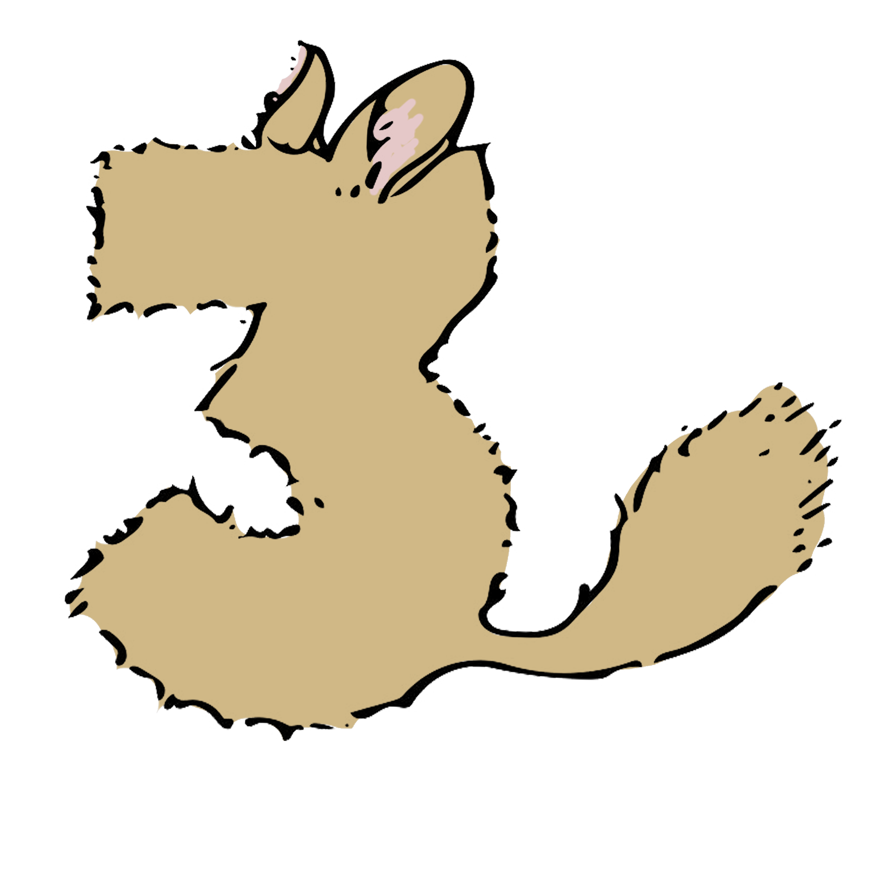
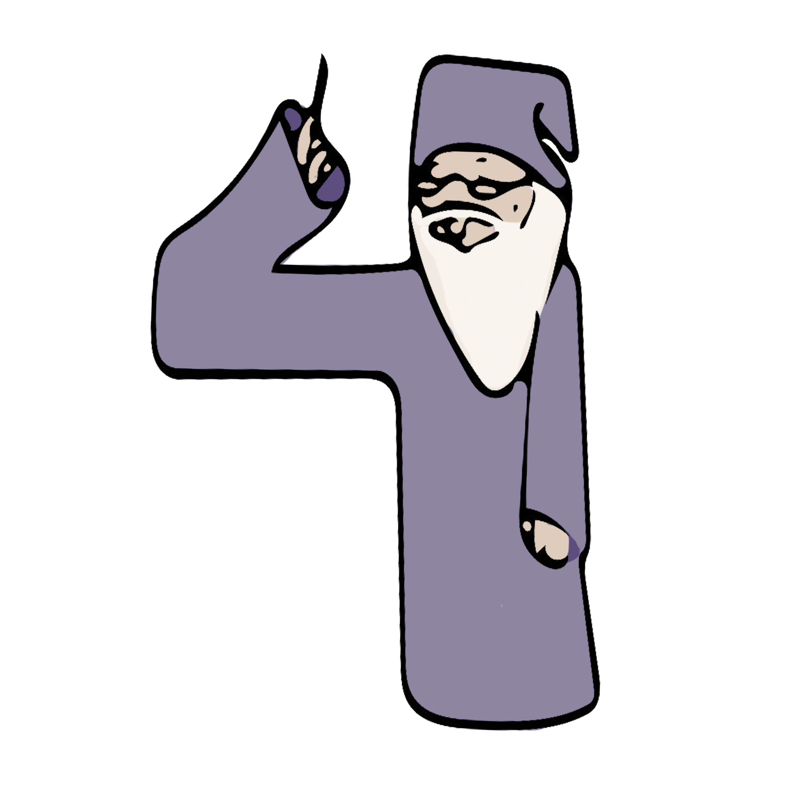
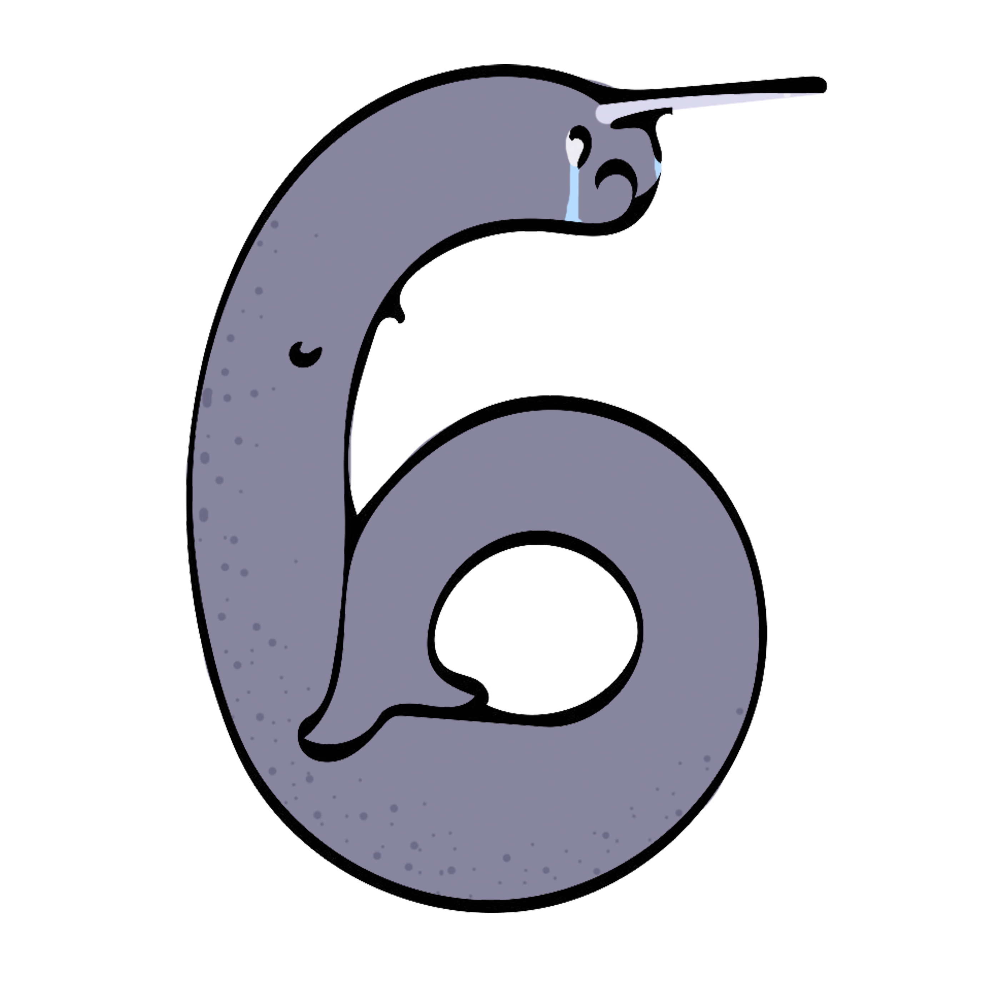
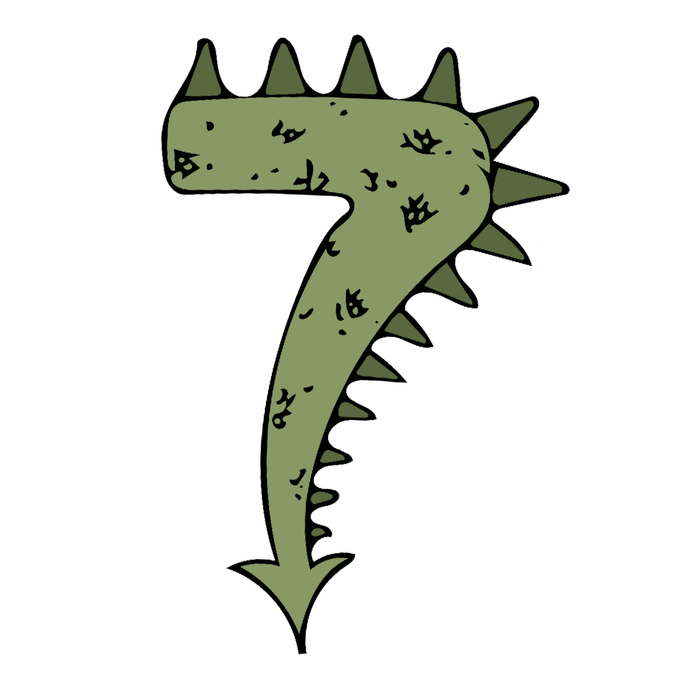
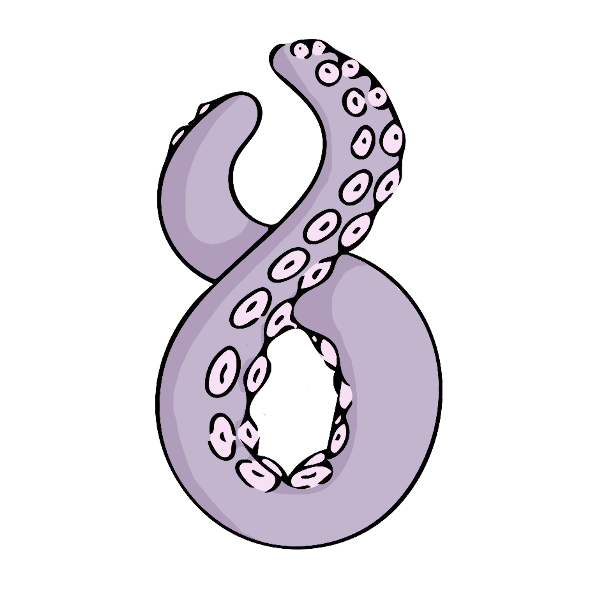
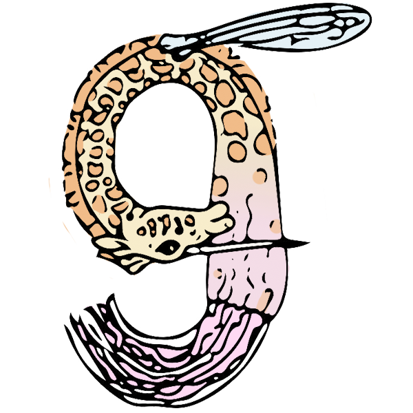
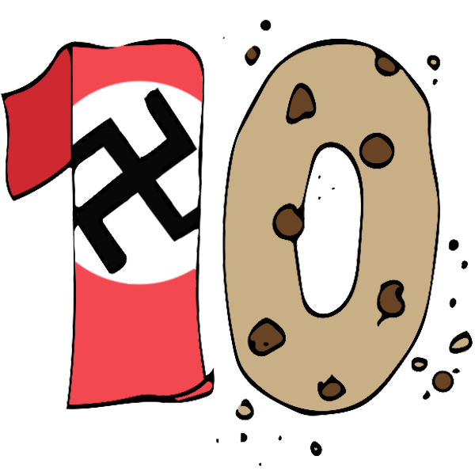

When humans turn 21, if they are found to be worthy, they will be awarded the 21 secrets of the universe. If you are reading this now on your 21st birthday... You are worthy. Congratulations!
2
When angels cry their tears fall from the heavens and land in the bermuda triangle. The angel tears are so powerful they send you flying to another time in the bermuda triangle. In a parallel universe. However one cannot get back because angels don't cry in the parallel universe, they party and play limbo. And they win. Which results in even more parties, which result in earthquakes. Sucks to be you if you get pulled into the bermuda triangle.

Before chinchillas are born they are instilled with the knowledge of the meaning of life. However they are chinchillas and they cannot make sense of the information they have been gifted with, for they don't understand mandarin chinese (the language in which the information is given) or speak it to pass the information on to fellow chinese speaking creatures (homo sapiens). Nor do they understand the information in any way at all. Most of the time they do not even think about it.

Dumbledore is real.
There is a tribe of eskimos that celebrate a holiday roughly translating to "Bastards' Day" where they make homemade horns out of various materials and dance in ice cold water in honour of the loss of unicorns. The unicorns became extinct centuries ago, but the tradition still carries on.

Most people assume that the narwhale was the bastard offspring of the unicorns. Au contrair mes amis. The unicorn was the bastard child of narwhales. Thats why they don't exist anymore. Horses do not fare well in the depths of the oceans. Its a sad day for bastard children everywhere.

Alcohol, like beer and wine, is not from fermented plants and fruits. It is dragon milk. It makes baby dragons grow up big and strong, but humans are no where near the awesomeness that are dragons, so it makes us stupid. We cannot handle the power of dragon milk.

There is an animal that has mastered the human language: The Octopus. Which is phenomenal considering most people can't even figure out where its mouth is. The octopus is so smart it has hidden this fact from the majority of the population, save the few worthy enough to know the 21 secrets of the universe.

Once every 5 googleplex years a creature much resembling a narwhale, giraffe, jelly fish and wasp made of metal the size of a push pin crawls out of its natural habitat, the black hole, to find a mate. To mate they simply touch horns and the moment they touch horns, their opposing magnetism creates a massive explosion sending matter and space and time and magic flying in all directions. This could be the cause of the big bang, however several more years are needed to confirm this as the last living creature to witness this is most definitely dead from the blast.

Adolf Hitler's neighbor stole the cookie from the cookie jar and blamed him. This is why baby Adolf grew up to be so angry and wrathful. Don't steal cookies. Don't blame innocent potential psychopaths. This childhood secret was discovered when a society of physchologists stole Hitler and hid him in an underground bunker, from then untill his death several years later, in order to study what makes a human so aweful. His captivity for observation is also why he was never found. There are other factors, but psychologists believe this cookie jar theif to be the root of all evil. The more "farout" psychologists believe that this cookie theif may even be the anti-christ. This isn't supported by all members of this secret society of psychologists.
Every time you sneeze, some creature in a parallel universe sneezes at the exact same time. This phenomenon is a result of gravity, how this works we do not know yet. Everything in the everywhere is connected. Even the nowhere and the everywhere are connected. Connectivity. Unity. Life. Universes.
When the lights go down in the city, baby rabbits dream of candy corn chasing ferrets. Ferrets however dream of sensible shoes, even though they do not understand these dreams, and the majority of the time do not even remember having these dreams.
When god cries from happiness, he cries hot chocolate. There are special angelic miners that collect the tears and give it to his favourite creatures: humans. This is God's greatest gift to humans other than friendship and family -that turns out to be actually pretty great-, and chosen family in case your real family sucks, or you just want all the awesome families you can get and one decent family isn't enough. Family or no family, you will always have hot chocolate.
When God cries sad tears, he cries seltzer water.
When the devil cries, his tears are coffee, coca-cola, crystal meth, mentos, and heroin mixed together to form a super serum of things that will mess you up permanently. You will not come back from drinking satan's tears.
Narwhale and unicorn urine is one of the most important ingredients in making LSD. Drinking it pure would cause massive hallucinations and instant death.
Biscuits were invented by early primates. This discovery was lost however because primates weren't very intelligent and used poisonous berries one day to add a little zest to their mornings. It was tasty for a while and then they died, so on one fateful morning a large majority of the primates died. Those smart enough to not eat them later evolved several thousands of years later into humans.
Believe it or not, Egyptians weren't aliens. Neither were the people who made stone henge. But don't go thinking extra-terrestrials have never visited our precious earth. Santa-Clause was an extra-terrestrial. I say was because he has long since died. RIP Santa Clause, you modest, selfless, heart full extra-terrestrial. Note Santa Clause is not to be confused with E.T. E.T. isn't even the poor creature's name.
This fact just happens to rhyme. It is only a cooincidence. When the rare purple turkey bleeds in late June, leopard flowers will begin to bloom far far away on one of Saturn's moons, which in turn causes baby hienas to sing the song of the candy corn monsoons, because they can sense the season of the leopard blooming, and those can sense the bloody purple turkey bleeding and turkeys aren't smart enough to sense anything. If they happen to bleed in june, well then it was lucky for the zebra butterflies on the Saturn moon. Which moon we don't know, that information has been lost with the ages.
Every three seconds a worm hole eats an atom and sends it hurling back in space and time. Because of this frequent occurrence, most of the atoms in your cells, in your birthday cake, around you, part of you, and in the robots that take over the future union of gardeners and start the garden revolution, are from every time and place of the universe.
When a girl with the name of Gabby turns twenty one in the state of Oklahoma in a year that is a multiple of 5, a baby unicorn glitter making robot is born in the north pole. Is Gabby's survival of 21 years a result of the unicorn? or Is the unicorn th result of Gabby turning 21.